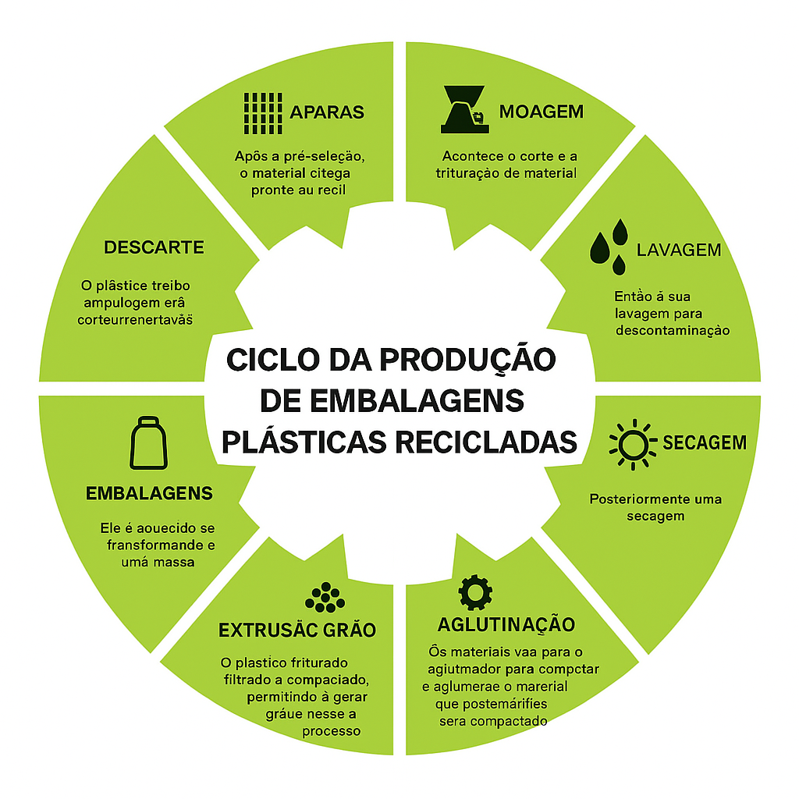

Nosso condomínio precisa de ações coletivas para revitalização, limpeza e preservação ambiental. Vamos juntos?
Por que agir agora e o que está em risco?
Benefícios de agir:
1. Valorização dos imóveis com um ambiente mais limpo e organizado.
2. Redução de doenças com o controle do lixo e entulho acumulado.
3. Convivência mais harmoniosa em áreas comuns seguras e preservadas.
4. Maior contato com a natureza e incentivo à educação ambiental.
Malefícios da inação:
1. Proliferação de insetos e animais peçonhentos devido ao lixo e mato alto.
2. Degradação de áreas comuns e vias internas.
3. Desvalorização do bairro e afastamento de investimentos.
4. Conflitos entre moradores sobre responsabilidades não assumidas.
Medidas Propostas
Vamos atuar juntos com mutirões, sinalização educativa, lixeiras apropriadas, comunicação direta com a administração e envolvimento das famílias nas ações.

O que os moradores querem mudar:
"Precisamos cuidar das áreas verdes que ainda temos aqui." - Morador(a) Anônimo
"É hora de limpar, plantar e recuperar nosso espaço!" - Morador(a) Engajado